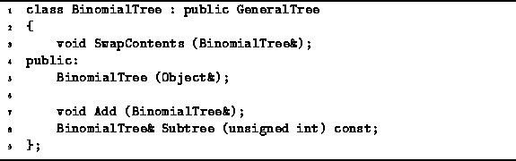
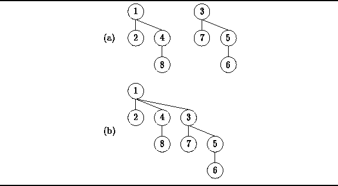
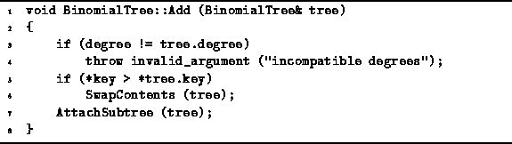

Data Structures and Algorithms
with Object-Oriented Design Patterns in C++
Data Structures and Algorithms
with Object-Oriented Design Patterns in C++
Since binomial trees are simply general trees with a special shape,
we can make use of the GeneralTree class
presented in Section  to implement the BinomialTree class.
As shown in Program ,
the BinomialTree class is derived from the GeneralTree class
from which it inherits almost all its functionality.
In addition to the constructor,
only two more member functions are declared--SwapContents and Add.
to implement the BinomialTree class.
As shown in Program ,
the BinomialTree class is derived from the GeneralTree class
from which it inherits almost all its functionality.
In addition to the constructor,
only two more member functions are declared--SwapContents and Add.
No new member variables a declared in the BinomialTree class. Remember that the implementation of the GeneralTree class uses a linked list to contain the pointers to the subtrees, since the degree of a node in a general tree may be arbitrarily large. Also, the GeneralTree class already keeps track of the degree of a node in its member variable degree. Since the degree of the root node of a binomial tree of order k is k, it is not necessary to keep track of the order explicitly. The degree variable serves this purpose nicely.

Program: BinomialTree Class Definition
The purpose of the SwapContents member function is evident from its name--it simply exchanges the contents of two nodes of a binomial tree. It is relatively easy to implement an algorithm to swap the contents of a node of a binomial tree. It is not difficult to ensure that the running time of SwapContents is O(1), regardless of the degrees of the nodes whose contents are swapped.
The Add member function is used to combine
two binomial trees of the same order, say k,
into a single binomial tree of order k+1.
Each of the two trees to be combined is heap-ordered.
Since the smallest key is at the root of a heap-ordered tree,
we know that the root of the result must be the smaller
root of the two trees which are to be combined.
Therefore, to combine the two trees,
we simply attach the tree with the larger root
under the root of the tree with the smaller root.
For example,
Figure illustrates how two heap-ordered binomial trees of order two
are combined into a single heap-ordered tree of order three.

Figure: Adding Binomial Trees
The implementation of the Add function is
given in Program .
The Add function takes a reference to a BinomialTree
and attaches the specified tree to this node.
This is only permissible when both trees have the same order.

Program: BinomialTree Class Add Member Function Definition
In order to ensure that the resulting binomial tree is heap ordered, the roots of the trees are compared. If necessary, the contents of the nodes are exchanged using SwapContents (lines 5-6) before the subtree is attached (line 7). Clearly the running time of the Add member function is

I.e., exactly one comparison and a constant amount of additional work is needed to combine two binomial trees.
 Copyright © 1997 by Bruno R. Preiss, P.Eng. All rights reserved.
Copyright © 1997 by Bruno R. Preiss, P.Eng. All rights reserved.